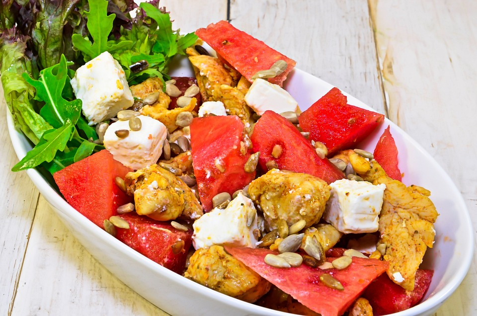
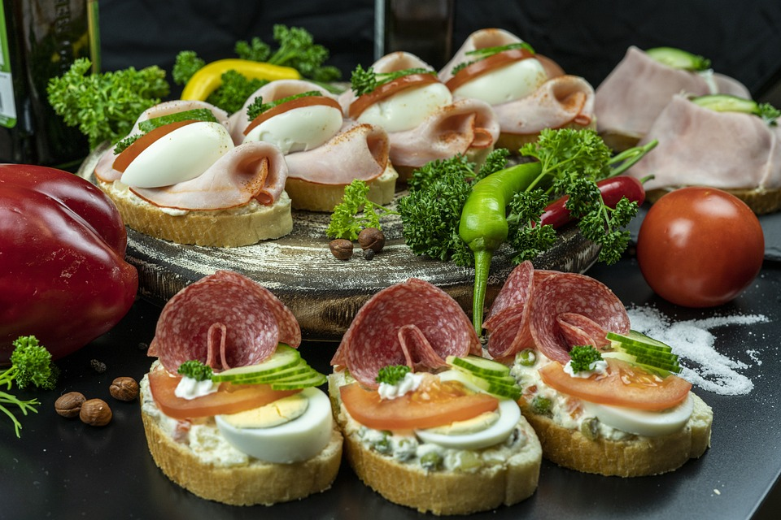
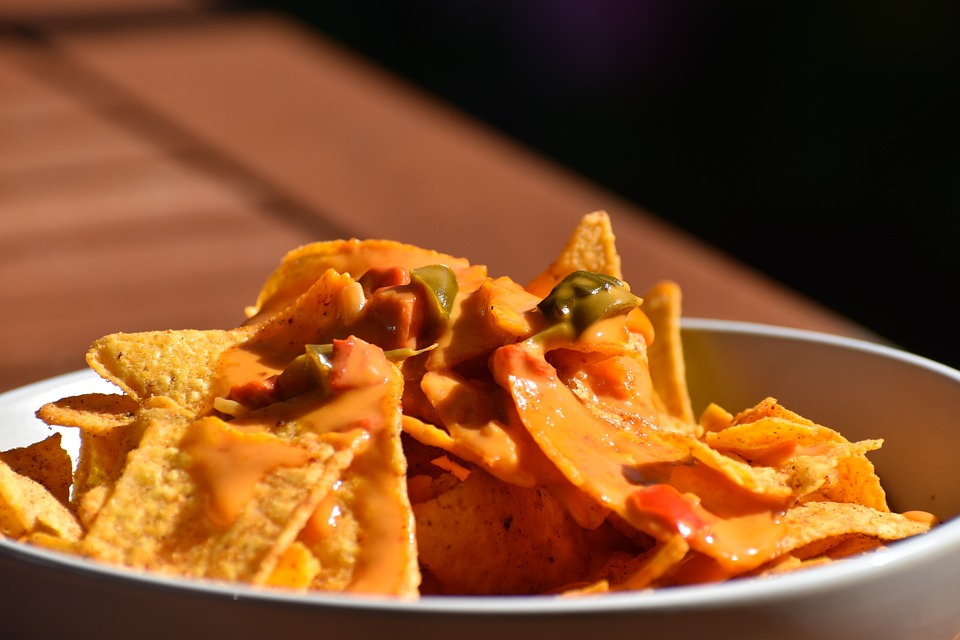
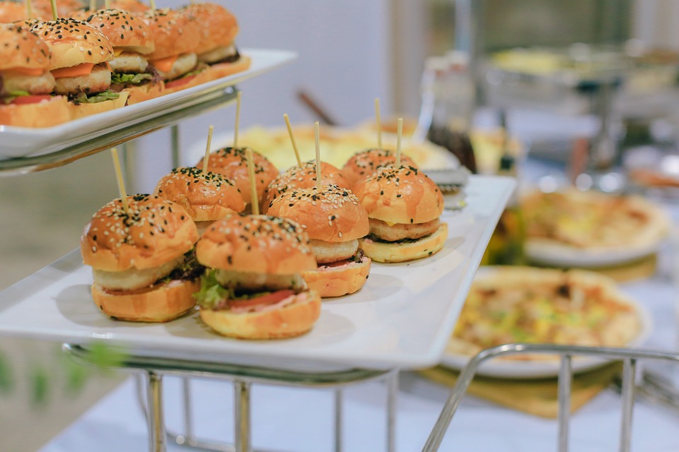
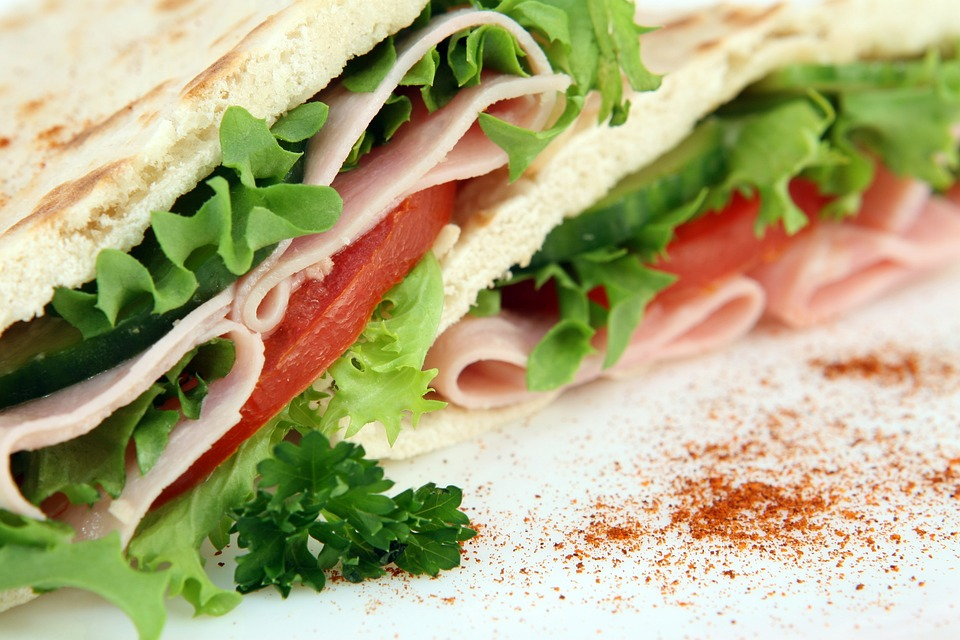
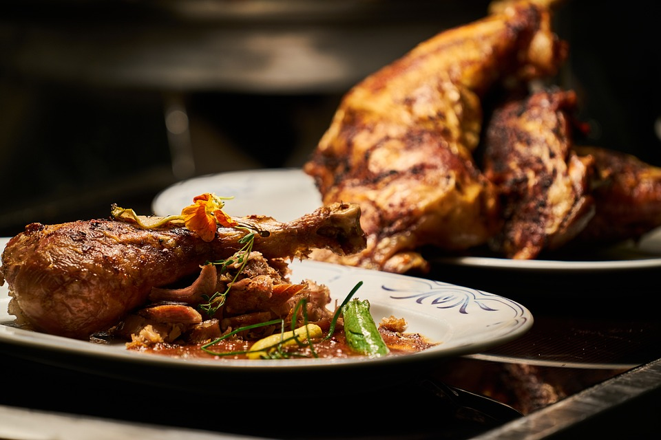
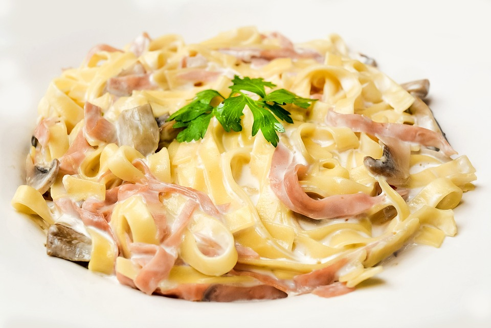
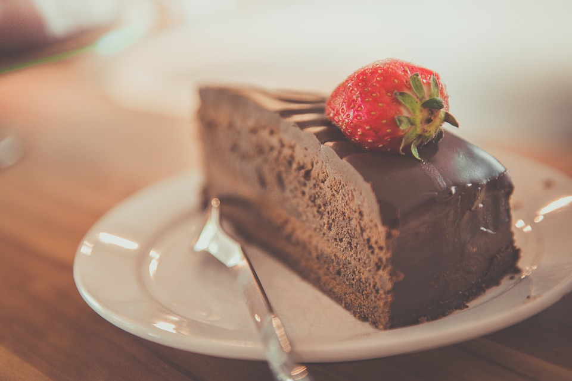
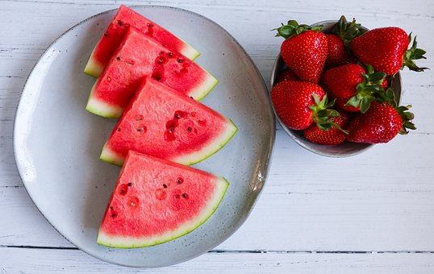

MENÚ DEL DÍA
Primer plato
- Ensalada de verduras
con sandía de temporada y pollo
marinado 
- Iberitos
jamón, pavo y salchichón en pan tostado con base de
ensaladilla, huevo, tomate y pepino 
- Nachos
acompañados de queso chedar fundido 
- Mini-burguer
de pollo o carne a la brasa con lechuga y salsa
inespa's 
- Pecaditos
deliciosos bocados de pan de pita con relleno de
lechuga, tomate y jamón york con salsa de yogur griego 
Segundo plato
- Ensalada de pasta
a la maravillosa salsa pesto

- Pollo asado
al horno de leña

- Filetes estofados
filetes en salsa a la receta tradicional de la
abuela

- Tagiatela
a la carbonara

Postre
- Chocchoc
Tarta de chocolate suizo

- Pancakes
Tortitas con sirope de arce y frambuesas y azúcar glass
espolvoreado

- Eclairs
rellenos de nata y fresas

- Delicias rojas
de sandía y fresa
